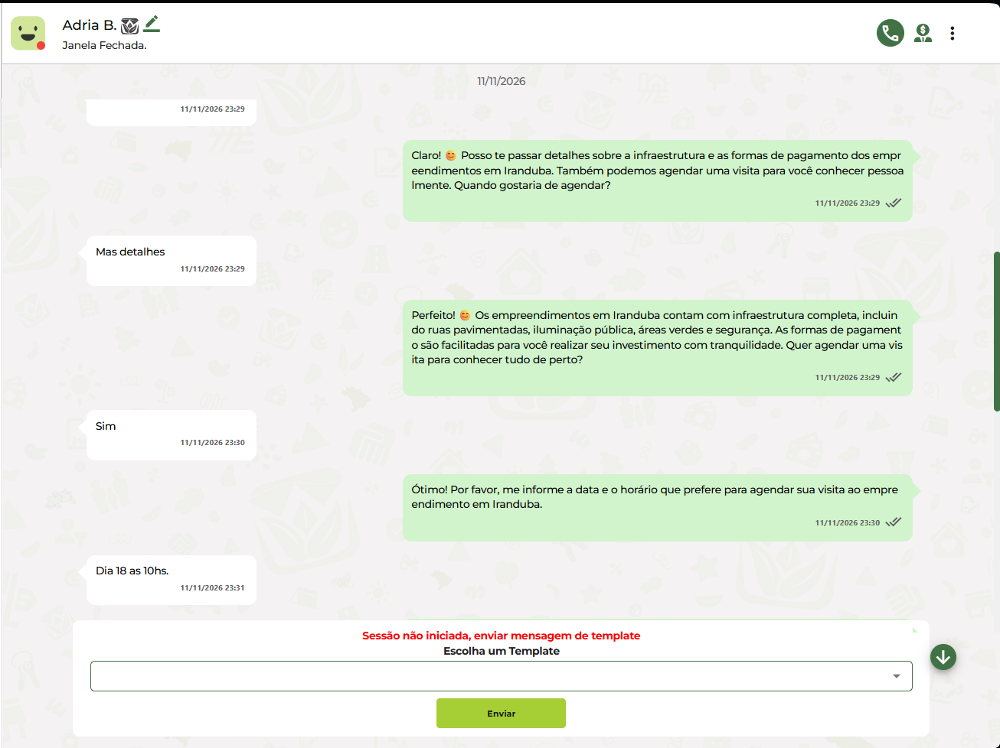
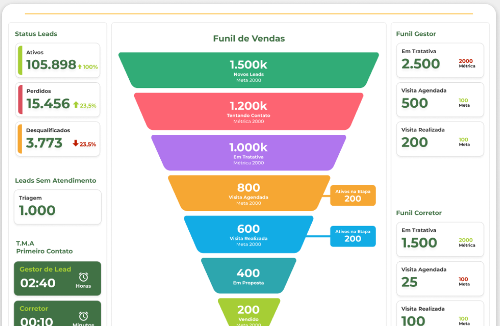
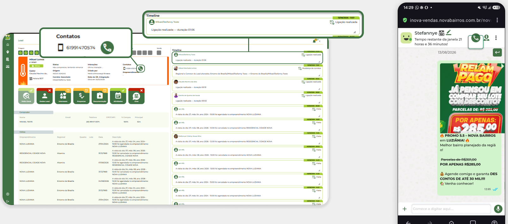
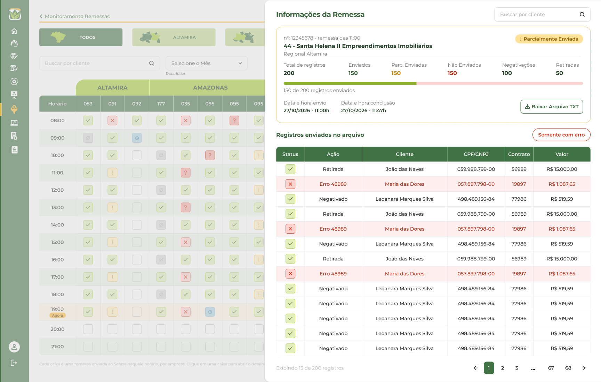

CONFERÊNCIA ANUAL NOVA BAIRROS · 2026
DEPARTAMENTO DE TI
Retrospectiva 2026 e Projetos 2027
2
Departamento de TI · Retrospectiva 2026 e Projetos 2027
O que vamos ver hoje
01
Fechamento do ano
O volume de OS de 2026 e como ele se distribuiu
02
Retrospectiva 2026
As principais entregas e o impacto de cada uma
03
Projetos 2027
Próximas entregas e prioridades de Vendas e ADM
01
Fechamento de 2026
Volume de ordens de serviço do ano
4
Departamento de TI · Retrospectiva 2026 e Projetos 2027
Total OS 2026
3013
OS abertas em 2026
▲ 4,6% vs 2025
2542
OS finalizadas
0% do total
102
Backlog atual
Projetos futuros
3h
Tempo médio de triagem
▼ vs 2025
2025 × 2026
3013 OS em 2025 contra 2880 em 2026: variação de 4,6%.
5
Departamento de TI · Retrospectiva 2026 e Projetos 2027
OS por tipo em 2026
Quantidade de OS por tipo
Manutenção
1140
Erro de sistema
1131
Acesso
490
Melhoria
188
Criação
62
Erro de usuário
56
Devolvidas
30
Manutenção lidera
Maior volume de solicitações do ano, garantindo o funcionamento dos sistemas.
Erro de sistema
Reforçando a importância do monitoramento e da atuação contínua na correção de falhas.
Melhorias e criações
Promovendo ajustes e evoluções para tornar os processos e a experiência dos usuários cada vez melhores.
02
Retrospectiva 2026
O que entregamos e o impacto de cada entrega
Receita
Risco legal ou fiscal
Esforço ou despesa
Inovação
Cada entrega mostra o tipo de impacto no canto da página
IMPACTO
Menos esforço ou despesa
Menos risco legal ou fiscal
7
Departamento de TI · Retrospectiva 2026 e Projetos 2027
ClariTalk
Número oficial da Meta
Números homologados e nenhum banimento em 2026.
Todos os canais em um só lugar
WhatsApp, SMS, e-mail, Instagram e Messenger.
Base dinâmica
Listas de contatos que se atualizam sozinhas para as campanhas.
Segurança jurídica
Relatório de disparos com os dados técnicos de cada envio.
IMPACTO
Menos esforço ou despesa
8
Departamento de TI · Retrospectiva 2026 e Projetos 2027
Quanto o ClariTalk economizou
RD Station · 2025
R$ 22.000
média mensal
1 número cadastrado
ClariTalk · 2026
R$ 17.000
média mensal
9 números cadastrados
Economia mensal estimada*
R$ 43.000
R$ 516.000 de economia ao ano
*Considerando R$ 60 mil/mês na RD Station versus R$ 17 mil/mês no ClariTalk.
Sem custo extra por usuário
Sem custo extra por números a mais
Custo por disparo
WhatsApp
R$ 0,36 por envio
SMS
R$ 0,0067 por envio
E-mail
R$ 0,0025 por envio
IMPACTO
Menos esforço ou despesa
9
Departamento de TI · Retrospectiva 2026 e Projetos 2027
iNova Chat e Roleta de leads
iNova Chat para todos
Liberado para qualquer usuário: administrativo, corretor ou coordenador.
- Conversa centralizada no iNova
- Mais estabilidade no chat
Roleta de leads
Os leads são distribuídos automaticamente entre os corretores.
- Fim da distribuição manual
- Aviso de novo lead recebido
IMPACTO
Receita
Inovação
10
Departamento de TI · Retrospectiva 2026 e Projetos 2027
IA no atendimento de leads
Primeiro atendimento 24h
A IA faz a triagem inicial dos leads em todos os empreendimentos.
Agenda a visita
O lead marca a visita na própria conversa, já registrada no iNova.
Próximo passo
Aprimorar a performance da IA, expandir sua base de conhecimento e enriquecer cada vez mais as interações com os clientes.

IMPACTO
Receita
Menos esforço ou despesa
11
Departamento de TI · Retrospectiva 2026 e Projetos 2027
Fluxo de visita automatizado
Agendamento
Visita marcada pelo corretor ou pela IA, com histórico no lead.
Confirmação automática
O ClariTalk pede a confirmação ao cliente e registra se a visita aconteceu.
Reagendamento
Se não confirmar, o lead volta para o gestor fazer o reagendamento.
IMPACTO
Menos risco legal ou fiscal
Receita
12
Departamento de TI · Retrospectiva 2026 e Projetos 2027
Funil de Vendas e Discadora

Funil de Vendas
Gestores e corretores acompanham cada etapa, da entrada do lead até a venda.

Discadora no iNova
Ligações feitas pelo próprio iNova, registradas na linha do tempo do lead.
IMPACTO
Menos risco legal ou fiscal
13
Departamento de TI · Retrospectiva 2026 e Projetos 2027
Serasa
Evolução das regras
Duas grandes mudanças nas regras de integração e uma terceira em desenvolvimento. As alterações impactam diretamente o tempo disponível para desenvolvimento ao longo do trimestre.
Monitoramento de remessas
Em desenvolvimento nova tela para acompanhar envios e recebimentos do Serasa, ampliando o controle e a confiabilidade.
Mais controle
Correção das falhas encontradas no processo de negativação.

IMPACTO
Inovação
Receita
14
Departamento de TI · Retrospectiva 2026 e Projetos 2027
App Nova Bairros
Refit completo
Mais moderno, mais rápido e mais fácil de usar.
Pagamento via PIX
O cliente paga as parcelas com PIX direto no app.
Versão web, Android e IOS
O app está disponível em todas as plataformas.
IMPACTO
Menos risco legal ou fiscal
15
Departamento de TI · Retrospectiva 2026 e Projetos 2027
Lançamento Lake Village
O que aconteceu
Durante o lançamento, identificamos um grande volume de acessos automatizados (bots), que provocou sobrecarga e deixou o sistema temporariamente indisponível. Uma situação inédita até então.
O que fizemos
Bloqueamos os acessos para proteger o sistema e os dados, além de implementar um controle de requisições por segundo para evitar novas sobrecargas.
Resultado
O episódio reforçou a importância de evoluir continuamente nossa segurança diante dos avanços tecnológicos e do uso de IA, destacando a necessidade de ampliar os investimentos em proteção e infraestrutura.
17
Departamento de TI · Retrospectiva 2026 e Projetos 2027
Outras entregas do ano
Loteamento
Várias melhorias de performance na plataforma, que ficou mais rápida para quem usa.
Menos esforço ou despesa
Cadastro de corretor via link
O próprio corretor faz o cadastro e acompanha a solicitação pelo e-mail, direto no iNova.
Menos esforço ou despesa
Personalização do iNova
O sistema de vendas pode ganhar a identidade de um empreendimento, como no Lake Village.
Inovação
03
Projetos 2027
Próximas entregas e prioridades de Vendas e ADM
19
Departamento de TI · Retrospectiva 2026 e Projetos 2027
Próximas entregas
Serasa 2.0
Nova versão do processo de negativação.
IA profissional
IA levada para dentro do ClariTalk, com mais qualidade no atendimento.
Discadora no ClariTalk
Ligações integradas ao ClariTalk.
20
Departamento de TI · Retrospectiva 2026 e Projetos 2027
Próximas entregas
iNova Atende
Atendimento, conversa e negociação automatizados.
Link de pagamento GetNet
Gerar o link, copiar e enviar ao cliente.
21
Departamento de TI · Retrospectiva 2026 e Projetos 2027
Prioridades 2027 por setor
VENDAS
1
Distribuição de leads em massa
2
App iNova HUB: notificações
3
IA no follow-up de leads
4
IA na validação de documentos da proposta
5
Chat privado dentro do iNova
6
Suprimentos: melhorias orçamentárias
7
Cadastro de campanha
8
Marketplace
ADMINISTRATIVO
1
iNova Atende: atendimento
2
iNova Atende: negociação
3
Link de pagamento da entrada
4
IA na validação de documentos da proposta
5
iNova HUB: construções offline
6
iNova Atende: distrato
7
Projeto de premiação da Nova
Em verde-claro: prioridade nos dois setores
22
Departamento de TI · Retrospectiva 2026 e Projetos 2027
Projeto em comum: IA na documentação
Prioridade de Vendas e ADM
Validação de documentos da proposta com IA
O problema
Hoje a conferência dos documentos da proposta é manual e demorada.
A solução
A IA lê e confere os documentos e aponta o que precisa de correção.
Impacto esperado
Propostas aprovadas mais rápido, com menos retrabalho e menos risco.
23
Departamento de TI · Retrospectiva 2026 e Projetos 2027
Cadastro de compradores com IA
A IA lê os documentos anexados à proposta e preenche os dados do comprador.
O usuário só revisa cada dado com o documento ao lado e confirma.
Obrigado!
Perguntas, ideias e sugestões são bem-vindas
Departamento de TI